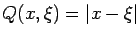
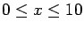
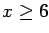
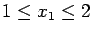
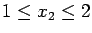
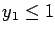
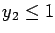

Revised: November 16th and 17th.
Due: Thursday, November 21, 2002.
- 1.
- Birge and Louveaux, page 244, question 2.
- 2.
- Birge and Louveaux, page 244, question 4.
- 3.
- Let
,
with
uniformly distributed on [0,6]
and
.
Show that the E-M upper bound and the Jensen lower bound both
equal Q(x) for .
- 4.
- For the second stage problem defined in question 4 on page 102,
find the minimizers x for the E-M and Jensen bounds.
What do you conclude?
- 5.
- For the second stage problem defined in question 1 on page 101,
find the minimizers for the UBmean,
E-M, and Jensen bounds.
You can assume

and
.
- 6.
- For the second stage problem defined in question 1 on page 101,
restrict
and
.
Further, drop the upper bound constraints 
and .
For the resulting problem,
find a minimizer for the upper bound on Q(x) derived using
the scheme of section 9.5(b).
John E Mitchell
2002-11-17